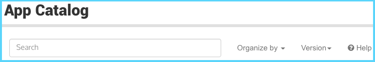
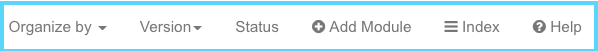

Terminology¶
- App
- A tool in the KBase narrative interface. In a narrative, users select the app, it opens a new cell, users specify inputs, outputs, and optional parameters, and it may or may not create a separate output cell. In SDK, apps are part of a module and have a defined function, user interface, and code for implementing the app.
- appdev
- The development environment where app user interfaces can be tested ( https://appdev.kbase.us ).
- Catalog
For general users, the Catalog is a listing of available apps and modules along with the documentation that developers included. Users can select whether they want to see released, beta, or dev apps and they can be sort the list.
User App Catalog
For registered KBase developers, there additional catalog options.
Developer App Catalog
Developers-Only
- A direct link for registering a module
- An index link that has several useful resources
- A catalog status
- Data Type Catalog
- A listing https://narrative.kbase.us/#catalog/datatypes of the current data objects with links to their specification documentation.
- Function Catalog
- A listing https://narrative.kbase.us/#catalog/functions of the current functions
- Github repository
- Also called ‘github repo’ or ‘git repo’. A repository stored at https://github.com or in an organization’s github. It can be in your personal GitHub account or part of an organization’s or project’s account. For use in KBase, it must be public.
- Method
When defining the user interface, a method is another name for an app. This is defined in a directory called ui/narrative/methods/<app name>.
Code written in python will have python methods. A subset of the python methods correspond to apps. Those that do are named for the apps.
- Module
A module includes all of the components for one or more apps. The apps are managed as a group. All the components are in the same directory on your local machine or in one github repository. The directory and the github repository are typically the same name as the module. A catalog of existing modules are found at https://narrative.kbase.us/#catalog/modules.
The pros for grouping multiple apps in one module include:
- Apps that are part of a logical grouping are all found together
- Common functions that are shared by the apps are defined once
- The specification file is only defined once
The pros for creating one app per module include:
- The apps are revised independently, and version numbers are specific to the app, not the group of apps
- The implementation file for some apps can get really long. Combining them into one module can get difficult to manage.
- Workspace Service
The Workspace Service (WSS) is primarily a language independent remote storage and retrieval system for KBase typed objects (TO) defined with the KBase Interface Description Language (KIDL). It has the following primary features:
- Immutable storage of typed objects with
- user defined metadata
- data provenance
- Versioning of typed objects
- Referencing from typed object to typed object
- Typechecking of all saved objects against a KIDL specification
- Collecting typed objects into a workspace
- Sharing workspaces with specific KBase users or the world
- Freezing and publishing workspaces
- Wrap an App
- The SDK can be used to create a wrapper around a third-party software tool and make it accessible through KBase. The guide for Editing your app's Dockerfile has useful kb_fasttree and kb_ballgown . The developer has the option of implementing some or all of the functionality of the original tool into a KBase app.